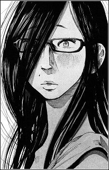

¿Que es Oyasumi Punpun?
Oyasumi Punpun (おやすみ プンプン / Buenas noches, Punpun) es un manga japonés escrito e ilustrado por Inio Asano.
La historia sigue a Onodera Punpun, un niño normal que debe hacer frente a sus amigos y familia disfuncional, su interés amoroso,
su adolescencia en sentido contrario y su mente hiperactiva.
A medida que la vida de Punpun se vuelve cada vez más caótica,
comienza a tratar temas relacionados al pensamiento autodestructivo del protagonista y su condición existencial.
La historia a menudo es elogiada por los muchos puntos de vista filosóficos presentados por cada personaje.
Argumento
Oyasumi Punpun sigue la vida y las experiencias de Punpun, un muchacho que vive en Japón, así como a algunos de sus amigos.
El manga sigue a Punpun a medida que crece, divide el libro en alrededor de 4 etapas de su vida:
- Escuela primaria.
- Escuela media.
- Escuela secundaria.
- Los 20 años.
Un aspecto único de esta obra es el uso de estilización de Inio Asano para dibujar a Punpun y a su familia, representados de forma amorfa y dando la sensación de ser pollos.
A lo largo del manga, el camino de Punpun sufre cambios estilizados con su edad, estado de ánimo y el ambiente, llegando a ser representado de la misma forma que el resto de personajes.
Personajes Principales
Punpun Punyama
(Punpun Onodera)

Punpun es un joven que con mayor frecuencia se representa con una forma similar a la de un pollo, a pesar de que también se muestra en las otras formas.
Cuando se siente confundido acerca de la vida o deprimido, él consulta a "Dios" por medio de un canto que su tío le enseñó: "Dear God, dear God, tinkle- tinkle hoy!"
Aiko Tanaka

El amor de la infancia de Punpun. Al principio de la obra, ella le sugiere a Punpun huir juntos a Kagoshima.
Su madre es miembro de una secta que toma importancia conforme avanza el manga.
Ya en su adultez, se vuelve una persona sin ambiciones y trabaja como modelo.
Sachi Nanjou

Una mujer joven que se reúne con Punpun en su vida adulta joven. Es una aspirante a mangaka que llega a ser una amiga cercana de Punpun.
Dios
Un ser que aparece como una cabeza afro, que a menudo aparece en frente de Punpun en sus momentos de necesidad.
Aparecía cuando Punpun recitaba "Querido Dios, Querido Dios, tinkle- tinkle hoy!".
Cuando Punpun era un niño aparece como un personaje útil. Téngase en cuenta que este personaje desaparece cuando Punpun ingresa a la secundaria y aparece de nuevo a sus 19 años.
A medida que avanza la historia es obvio que es una manifestación de los pensamientos más oscuros de Punpun.
Volumenes
| N.° | Titulo | Fecha de Lanzamiento |
|---|---|---|
| 1 | «Buenas noches, Punpun 1» | 3 de agosto del 2007 |
| 2 | «Buenas noches, Punpun 2» | 28 de diciembre del 2007 |
| 3 | «Buenas noches, Punpun 3» | 5 de junio del 2008 |
| 4 | «Buenas noches, Punpun 4» | 30 de enero de 2009 |
| 5 | «Buenas noches, Punpun 5» | 30 de junio del 2009 |
| 6 | «Buenas noches, Punpun 6» | 26 de diciembre del 2009 |
| 7 | «Buenas noches, Punpun 7» | 30 de setiembre del 2010 |
| 8 | «Buenas noches, Punpun 8» | 26 de febrero del 2011 |
| 9 | «Buenas noches, Punpun 9» | 28 de octubre del 2011 |
| 10 | «Buenas noches, Punpun 10» | 27 de abril de 2012 |
| 11 | «Buenas noches, Punpun 11» | 30 de noviembre del 2012 |
| 12 | «Buenas noches, Punpun 12» | 28 de junio del 2013 |
| 13 | «Buenas noches, Punpun 13» | 27 de diciembre del 2013 |